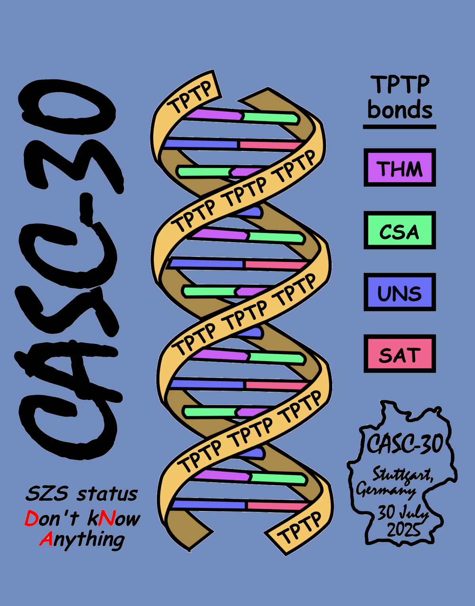

The CASC-30 Proofs

The CASC-30 Requirements
- No verified track yet, first steps
- The sad results
- The 482 failures
- 12 refutations without $false roots
- 30 with duplicate formula names
- 91 incorrectly intriduced new symbols
- 172 with steps using non-existent parents
- 177 with syntax errors in formulae
The CASC-30 Inferences
- Using a SAT/SMT/ATP
subsystem to infer $false
- Drodi calls an internally implemented SAT solver
- E calls PicoSAT
- iProver calls MiniSAT and Z3
- Leo-III calls E
- Vampire calls MiniSAT and CaDiCal and Z3
- Listing all the formulae
sent as parents
- E on GEG019^1, PicoSAT step with 114 parents, 114 used
- Leo-III on SWW474^3, E step with 950 parents, 14 used
- Drodi on ALG104+1, SAT step with 1219 parents, 663 used
- Vampire on SWW593_2, Z3 step with 5617 parents 194 used
- iProver on NUM862+1, Z3 step with 72367, unknown used
What is Acceptable?
- Is a subsystem step an inference
step?
- "Inference rules" vs. "inference systems"?
- Inference rules: Polynomial in size (weight?) of parents?
- Inference systems: More than polynomial in size (weight?) of problem?
- Verification
- Likely for inference rule steps
- Less likely for inference system steps
- What parents
should be listed for an inference step?
- Are irrelevant parents acceptable?
- How many relevant parents are acceptable?
- No parent packing!
- Granularity
vs. Explainability vs. Verifiability
- N-ary inferences
- log2(max(N)) as a measure of granularity
- Granularity can be related to Explainability
- Fine grained proofs are often easier to verify
- I'd like to discuss this!